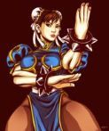

Selecione um Personagem
- 
-

-


Ryu
Ele é capaz de realizar as técnicas Hadoken, Shoryuken e Tatsumaki Senpuukyaku, porém em variações mais poderosas. Ele também adquire alguns golpes de Akuma, como seu teletransporte e o mortal Shun Goku Satsu.